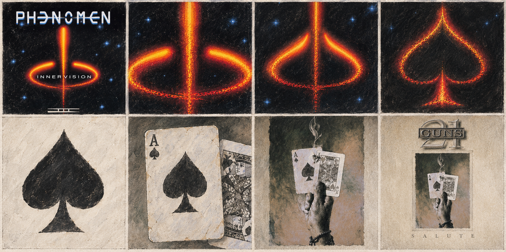
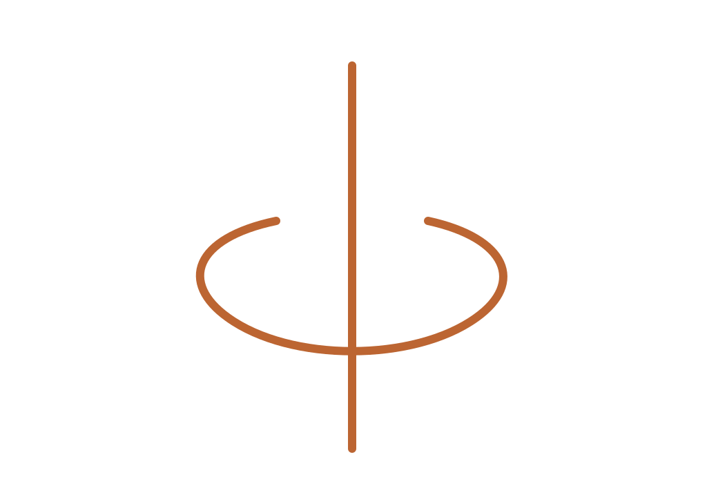
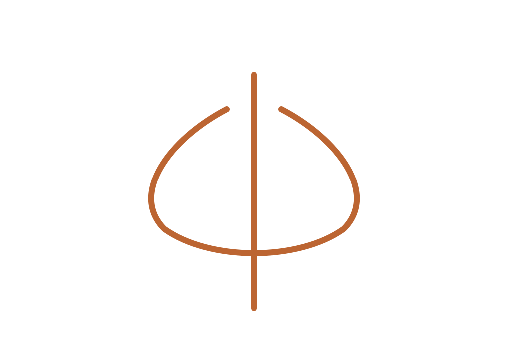
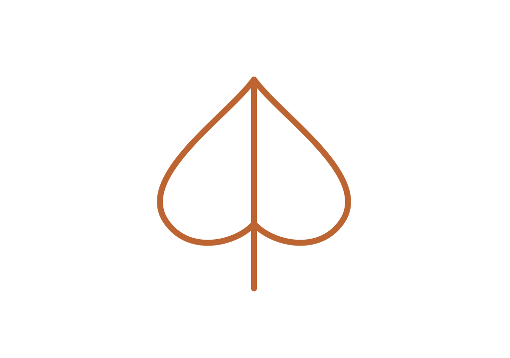
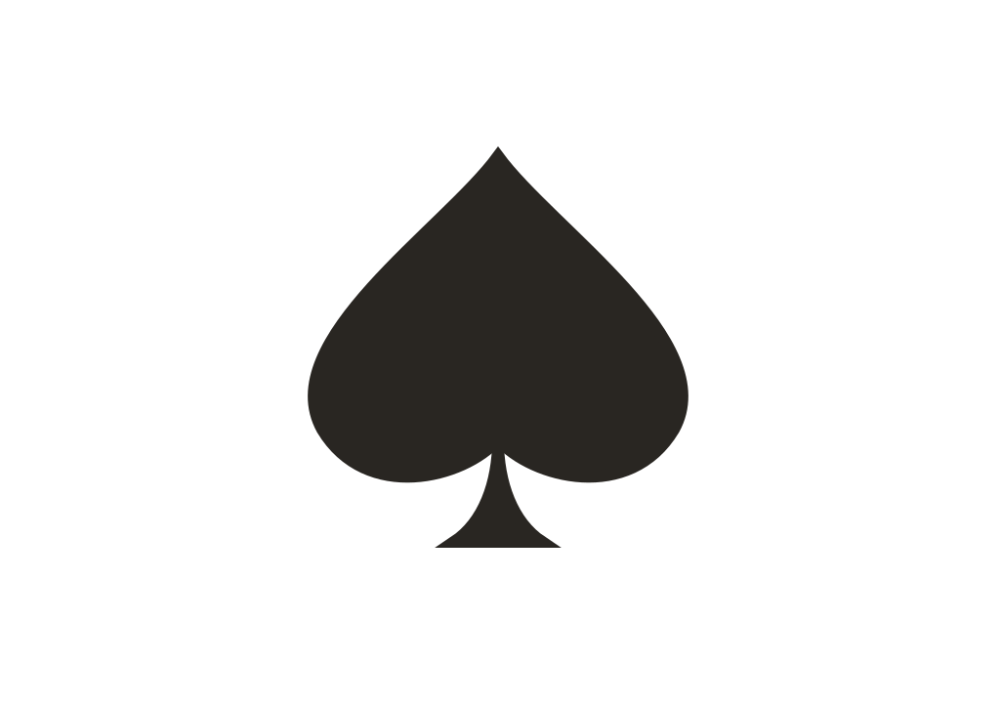
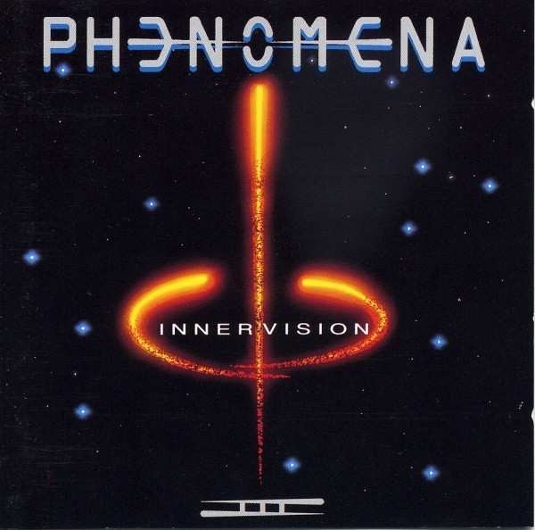
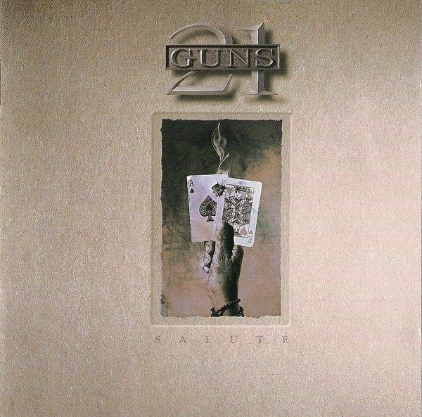

CP10 · Dirección elegida: símbolo → pica. Preparación para Codex; animación todavía pendiente.

Lectura izquierda a derecha, fila superior y luego inferior. El boceto simplifica cartas y pica; los originales gobiernan el resultado.






Geometrías aproximadas: se requiere registro al original, no aprobación automática de un contorno genérico.